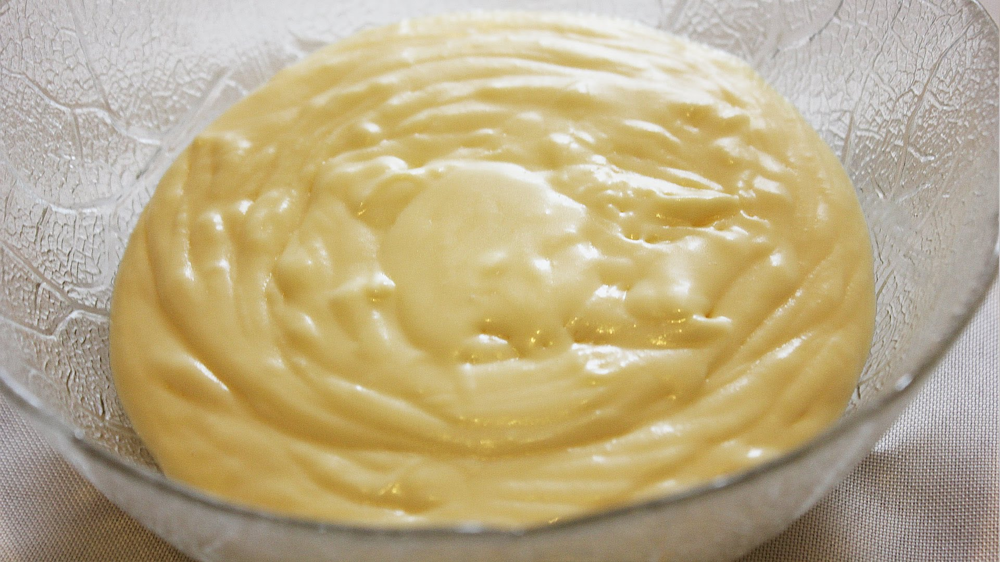

Масляный крем на сгущенном молоке
Для того, чтобы крем получился однородным, необходимо, чтобы продукты были комнатной температуры. Масло должно быть размягченным. Из указанного количества ингредиентов получается 350–400 мл крема.
Ингридиенты:

180 г сливочного масла
300 г сгущенного молока
Приготовление
Масло взбить.
Добавить часть молока, перемешивая на небольшой скорости.
Добавить все молоко, взбить на небольшой скорости до образования однородного, воздушного крема.